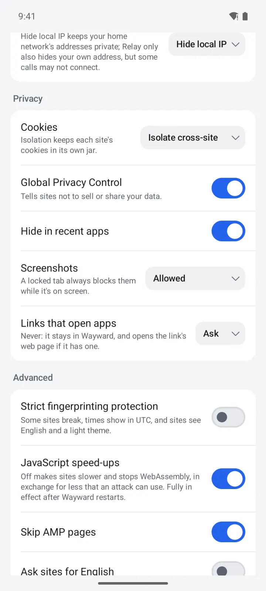

Lock Wayward down
Walkthrough
By default, Wayward blocks ads and trackers, encrypts history and tabs on your phone, and locks private tabs. If other people use your phone, or you just want more, here's how to tighten everything in about five minutes. You'll need a screen lock (fingerprint, face or PIN) set up on your phone.
1. Pick how much to block
Open the ⋮ menu, then Settings > Shields & Privacy. Ad blocking starts on Standard. Strict also blocks phishing sites, tracking in links and "open in app" banners; it breaks a few more sites. See choose how much Wayward blocks.
2. Make private the default
Go back to Settings, then Tabs and History:
- Turn on Private by default. Links from other apps, and the tab Wayward starts with, then open as private tabs, which keep no history and forget their cookies when they close.
- Check that Lock private tabs is on. Every way into private tabs then asks for your fingerprint, face or PIN first.
- Leave Locked tabs lock again on Right away, so whatever you locked closes again as soon as you look away from it.

3. Check that your downloads are locked
Go back to Settings and tap Downloads. Under Lock, Lock downloads is on to start with: the Downloads screen asks for your unlock before showing anything. Keep new downloads on Private, in app (where they start), so they stay out of your gallery and behind that lock.

4. Keep Wayward out of screenshots and recent apps
In Settings > Shields & Privacy, under Privacy:
- Hide in recent apps is on to start with: your phone's app switcher shows Wayward blank.
- Screenshots starts on Not in private tabs. Pick Blocked to stop screenshots and screen recording everywhere in Wayward.

5. Lock anything else that's sensitive
- One tab: open the ⋮ menu on it and tap Lock this tab.
- A whole set of tabs: make a space for them and turn on Lock this space. See spaces.
6. Decide what happens when you close Wayward
If you'd like a clean slate each time, turn on Settings > Tabs and History > Delete everything when Wayward closes. Swiping Wayward away then deletes all tabs and browsing data. You'll start signed out of every site.
7. Know where the emergency button is
On the Tabs screen, ⋮ > Emergency delete closes every tab and deletes all browsing data at once, after one question, with the sites you set to shred automatically, keep light or always share. Bookmarks, downloads, saved tasks and other settings are kept. See clear data, Shred and Emergency delete.

That's it. For what each lock does, see locks; for what's encrypted on your phone, see what's encrypted.
More in Privacy & security
- See what was blocked, and let a broken site through
- Choose how much Wayward blocks
- Hide pop-ups and overlays on pages
- Secure connections, Secure DNS and the other privacy settings
- Camera, notifications and other site permissions
- Use private tabs
- Keep sign-ins apart with spaces
- Lock a tab, your private tabs, a space or Downloads
- Clear data, Shred a site, or delete everything